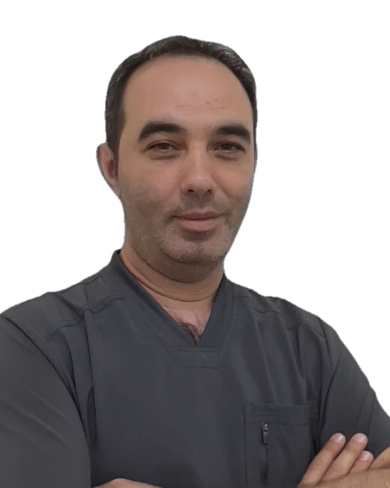
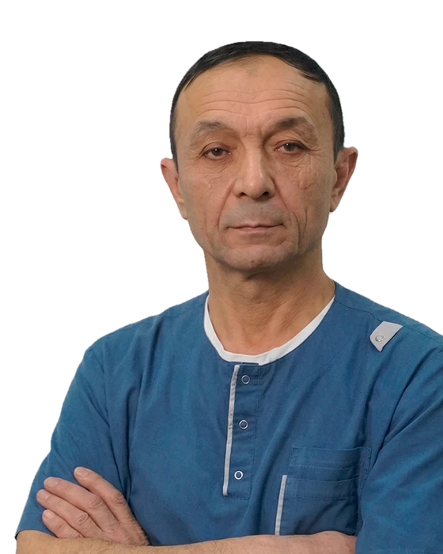
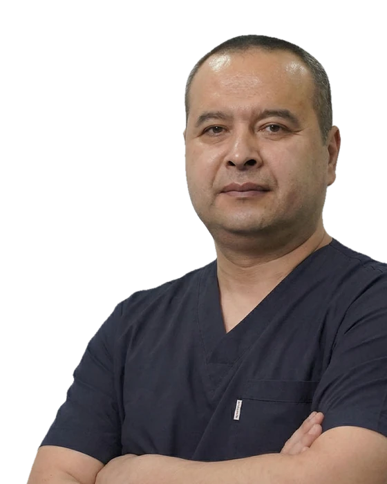
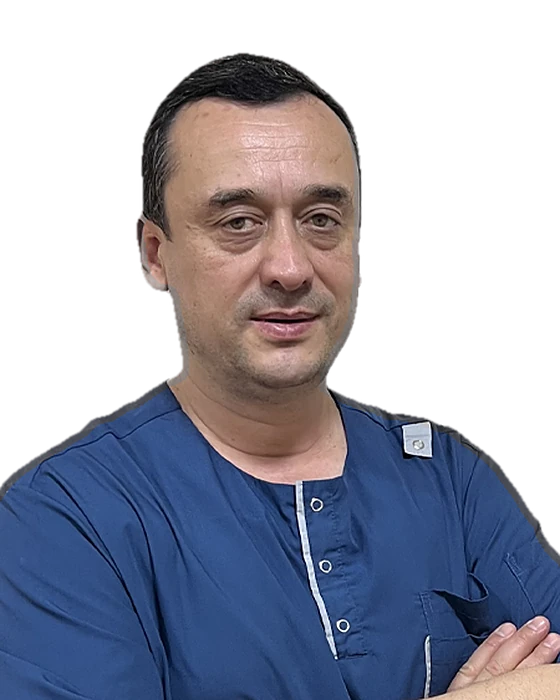
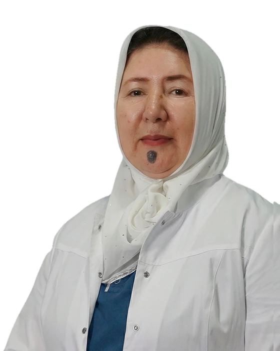
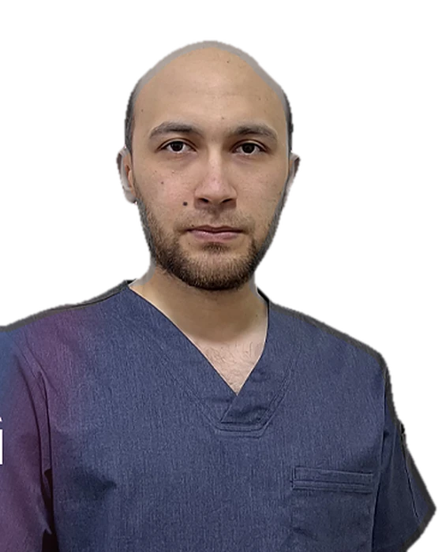
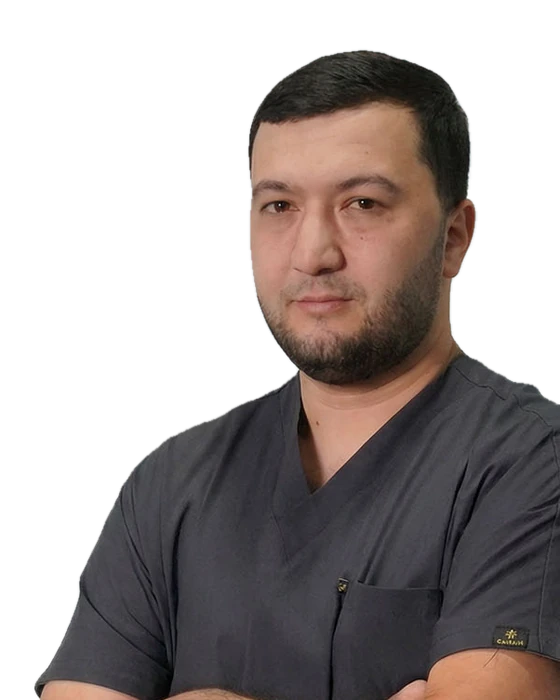
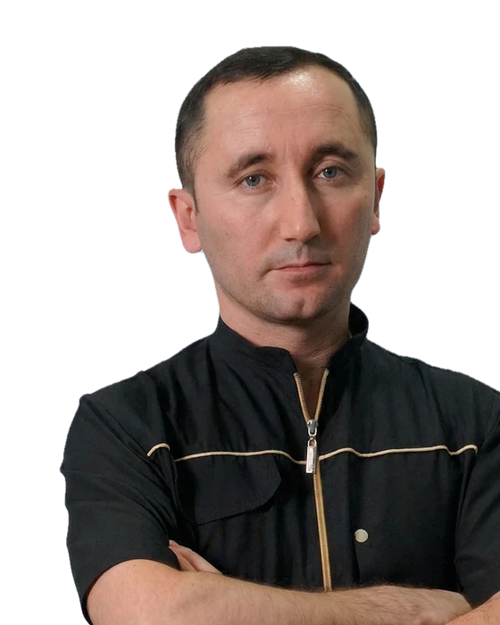
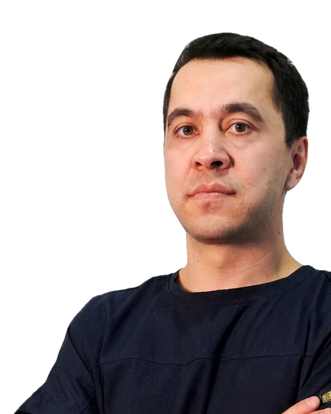

MRT
Magnit-rezonans tomografiya — bosh miya, umurtqa, bo'g'imlar va ichki a'zolarni batafsil, nurlanishsiz tekshirish.
Saydana — Namangan shahridagi tibbiyot va diagnostika markazi. MRT, MSKT, rentgen, UZI, EKG va laboratoriya bir joyda, mutaxassis shifokorlar qabuli va statsionar.
Saydana — Namangandagi ko'p yo'nalishli diagnostika markazi. Ochiq manbalarda u o'zbek-german loyihasi sifatida tavsiflanadi va MRT, MSKT, rentgen, laboratoriya hamda yurak va oshqozon-ichak tekshiruvlarini bir joyda birlashtiradi.
Har bir bemorga individual yondashuv: tekshiruv dasturi alohida tuziladi, kerak bo'lsa tor mutaxassisga yo'naltiriladi.
4.4 Yandex Maps'da · 125 ta bahoQon tahlili va boshqa laboratoriya tekshiruvlari.
MRT, MSKT va rentgen tekshiruvlari.
FGDS — oshqozon-ichak yo'llarini ko'rik.
EKG va exokardiografiya — yurak tekshiruvi.
Ro'yxat ochiq manbalar asosida tuzilgan. Narxlar va tayyorgarlik bo'yicha markazga qo'ng'iroq qilib aniqlashtiring. Batafsil ma'lumot uchun xizmatni bosing.
Magnit-rezonans tomografiya — bosh miya, umurtqa, bo'g'imlar va ichki a'zolarni batafsil, nurlanishsiz tekshirish.
Multispiral kompyuter tomografiya — tezkor va aniq qatlamli tasvir.
Ko'krak qafasi va suyak-bo'g'im tizimi rentgenografiyasi.
Qorin bo'shlig'i, kichik chanoq va boshqa a'zolarning ultratovush tekshiruvi.
Yurak UZI tekshiruvi — kameralar va qopqoqlar holati.
Yurak ritmi va o'tkazuvchanligini baholash.
Qizilo'ngach, oshqozon va o'n ikki barmoqli ichak endoskopiyasi.
Qon tahlili va boshqa laboratoriya tekshiruvlari.
Tibbiy yo'nalishlar: Radiologiya, kardiologiya, nevrologiya, neyroxirurgiya, gastroenterologiya, urologiya, ginekologiya.
Saydana shifokorlari bilan tanishing. Qabul vaqti va narxlarni markazga qo'ng'iroq qilib aniqlashtiring.

MRT shifokori

Rentgenolog
Endoskopist

Neyroxirurg
Nevropatolog

Nevropatolog
Kardiolog

Akusher-ginekolog

Urolog, endourolog

Otorinolaringolog

Xirurg, plastik xirurg

Xirurg, flebolog
Eng zamonaviy jihozlangan statsionar sharoitida davolaning va kasallikdan xalos bo'ling. Davolanish doimiy vrach va hamshira nazorati ostida o'tadi.
Yotib davolanish shartlari va narxlarni qo'ng'iroq qilib aniqlang.
Umumiy tavsiyalar. Aniq qoidalar tekshiruv turiga qarab farq qiladi, yozilayotganda operatordan so'rang.
Bu umumiy ma'lumot, shifokor tavsiyasi o'rnini bosmaydi.
0 / 5 tayyor
Quyidagi raqamlardan biriga bog'laning va muammoingizni ayting.
Operator sizga qulay vaqt va mutaxassisni tanlashda yordam beradi.
Nodira ko'chasi, 1 manziliga belgilangan vaqtda tashrif buyuring.
Ma'lumotlaringizni kiriting. Ariza matni tayyorlanib, markazning elektron pochtasiga yuborish uchun ochiladi. Shoshilinch bo'lsa, to'g'ridan-to'g'ri qo'ng'iroq qiling.
Dushanba–Juma 8:00 dan 17:00 gacha, shanba 8:00 dan 16:00 gacha. Yakshanba kuni markaz e'loniga ko'ra kardiolog shifokor qabul qiladi, vaqtini qo'ng'iroq qilib aniqlang.
Namangan shahri, Nodira ko'chasi, 1. Xaritada "Xarita ilovasida ochish" tugmasi orqali marshrut oching.
+998 (78) 223-10-10 yoki +998 (78) 223-11-11 raqamiga qo'ng'iroq qiling, yoki info@saydanamed.uz manziliga yozing.
Narxlar tekshiruv turiga qarab farq qiladi. Aniq narxni qo'ng'iroq qilib bilib oling.
Ba'zi tekshiruvlarga oldindan tayyorlanish talab qilinadi. Yozilayotganda operatordan so'rang.
Namangan viloyati, Namangan shahri,
Nodira ko'chasi, 1
| Dushanba – Juma | 8:00 – 17:00 |
| Shanba | 8:00 – 16:00 |
| Yakshanba | Kardiolog qabuli |
Saydana — Nodira ko'chasi, 1, Namangan